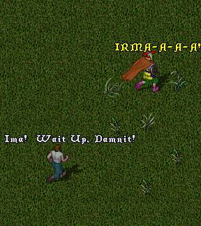
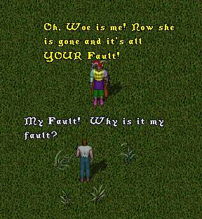
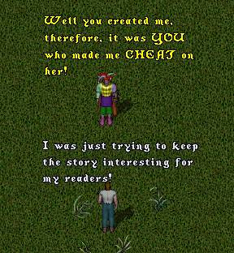
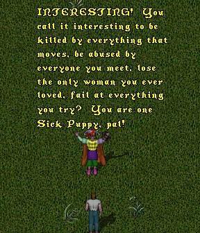
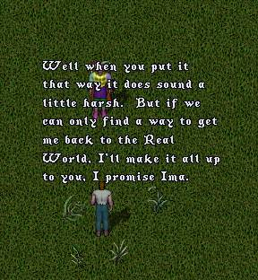
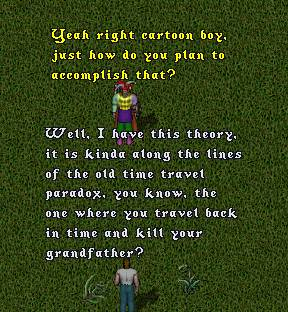
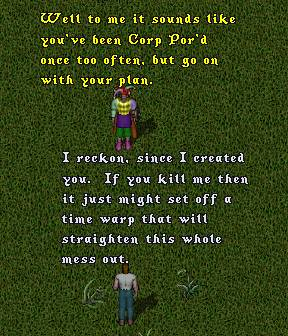
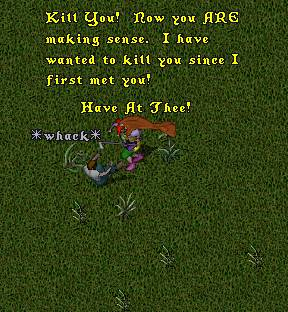
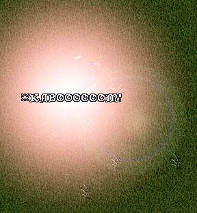

Episode 108: We're not in Kansas anymore, Toto! (conclusion) - This week we rejoin Tryon and ImaNewbie where we left them last episode. ImaNewbie is chasing the shadowy figure he believes is his beloved Irma and Tryon is chasing Ima trying to get him to concentrate on helping Tryon get back to the Real World. If you are new to the series you should spend some time reading the old 'toons first or you won't have a clue what's going on here.








As ImaNewbie lunges at Tryon and delivers a mighty blow from his war axe, there is a terrific explosion and a blinding flash of light.

Oh Oh! This doth not bode well! ... or does it? Did Tryon's plan work? Will he be returned to the Real World to continue the 'toons? Or maybe his death is just a cheap way for Tryon to end the 'toons altogether? Naw, couldn't be that. And even if he does get back to the Real World, will he keep his promise to ImaNewbie to make all the past injustices right? (I doubt it). Nevertheless, be sure to 'toon in next week as all is revealed (hopefully).